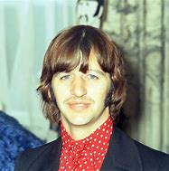

Éxitos de los años 60

Ver Letra Completa
Oh, yeah, I'll tell you somethin'
I think you'll understand
When I say that somethin'
I want to hold your hand
I want to hold your hand
I want to hold your hand
...
Miembros de The Beatles
- John Lennon - Vocalista, guitarra rítmica
- Paul McCartney - Vocalista, bajo
- George Harrison - Guitarra principal, vocalista 
- Ringo Starr - Batería, vocalista
Estrenada en 1963, "I Want to Hold Your Hand" ayudó a The Beatles a abrirse paso en el mercado estadounidense.
Alcanzó el número 1 en el Billboard Hot 100 el 1 de febrero de 1964 y marcó el inicio de la "Beatlemanía" en Norteamérica.
Fue la primera canción de The Beatles grabada con una grabadora de 4 pistas en los estudios Abbey Road. Paul McCartney y John Lennon la compusieron juntos en el salón de la casa de la novia de Paul.
Gracias al éxito de "I Want to Hold Your Hand", The Beatles fueron invitados a "The Ed Sullivan Show" en febrero de 1964, donde 73 millones de personas vieron su actuación en directo, un récord para la televisión estadounidense en esa época.